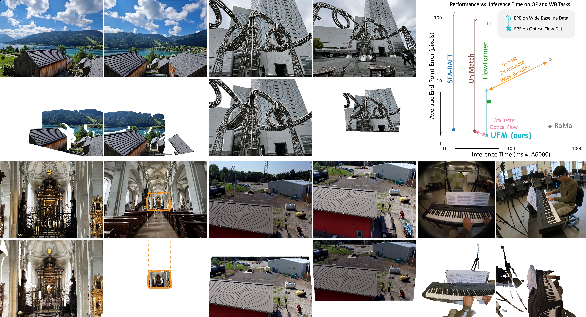

Robotic Task Demonstration
Our method demonstrates improved performance and safety in robotic manipulation tasks.
TLDR: We investigate applying pruning algorithms to Vision-Language-Action (VLA) models and find that pruning achieves memory savings but degrades performance and increases safety violations. We introduce GLUE, a post-pruning recovery method that preserves memory savings while restoring performance and safety through weight-space interpolation and SVD-based correction.

Our method preserves memory efficiency while maintaining performance and safety in robotic tasks.
GLUE achieves competitive memory efficiency while substantially recovering success rates and reducing safety violations.
Vision-Language-Action (VLA) models are powerful robotic controllers, yet remain memory-intensive to deploy. Motivated by pruning successes in large language models (LLMs), we investigate applying pruning algorithms to VLAs. We find that pruning achieves the expected memory savings but sharply degrades performance and increases safety violations. We introduce GLUE, a post-pruning recovery method that preserves the memory savings while restoring performance and safety. GLUE performs a simple weight-space interpolation between dense and pruned models and applies an SVD-based low-rank correction, restoring critical representational capacity without retraining. Across diverse VLA architectures and tasks in manipulation and navigation, GLUE achieves competitive memory efficiency while substantially recovering success rates and reducing safety violations.
GLUE (Gradient-based Low-rank Update Enhancement) is a post-pruning recovery method designed to restore the performance and safety of pruned VLA models. The method performs weight-space interpolation between the original dense model and the pruned model, followed by an SVD-based low-rank correction that restores critical representational capacity. This approach preserves the memory savings achieved through pruning while substantially recovering success rates and reducing safety violations across diverse VLA architectures and robotic tasks.
Demonstration videos showing the performance of our method on various robotic tasks.
Our method demonstrates improved performance and safety in robotic manipulation tasks.
Our method achieves competitive memory efficiency while substantially recovering success rates and reducing safety violations across diverse VLA architectures and tasks.
@article{glue2024,
title={Don't Run with Scissors: Pruning Collapses VLA Model Performance and Safety but it can be Recovered},
author={Authors will be added later},
journal={To be submitted},
year={2024}
}